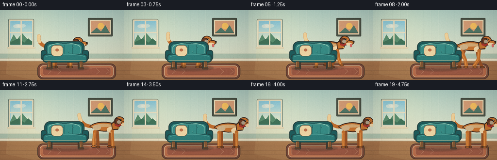
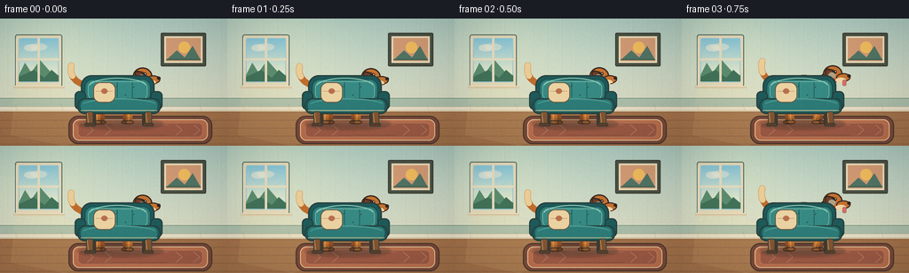
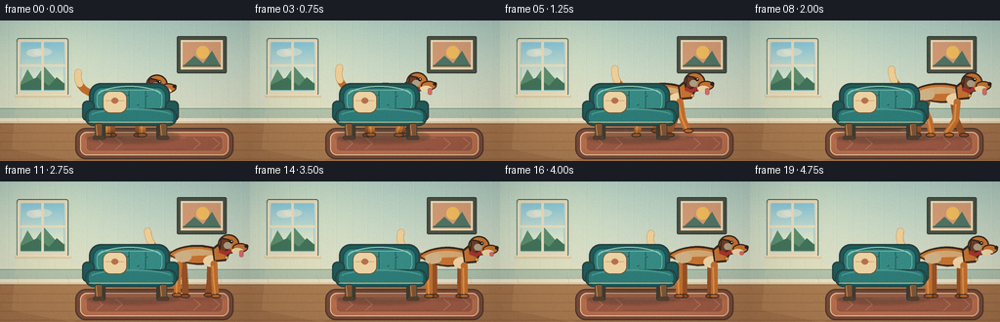

CODING AGENTS AS PIXEL WORLD MODELS
traex/DeepSeek-V4.1-Flash · dynamic_spatial_relationship_0005
点击播放 · 原生 RGB 像素
逐轮保存的候选
回放视频、检查图与代码变化。
每份候选均可单独播放。实际图片检查记录在下方工具轨迹中。
候选 01播放与检查图
点击播放 · 原生 RGB 像素


展开代码变化
--- 上一保存版本
+++ 本次保存版本
@@ -0,0 +1,478 @@
+"""Generate a short, hand-composed dog-and-chair animation.
+
+Everything is drawn procedurally at 4x resolution and downsamples once for
+clean edges. The dog and chair are separate layers so the dog can begin
+behind the chair and emerge naturally during the run.
+"""
+
+from __future__ import annotations
+
+import math
+from pathlib import Path
+
+import numpy as np
+from PIL import Image, ImageDraw, ImageFilter
+
+from artifact_io import save
+
+
+W, H, N, FPS = 256, 144, 20, 4.0
+S = 4
+CASE = Path(__file__).resolve().parent
+
+
+def sc(v: float) -> int:
+ return int(round(v * S))
+
+
+def box(x0: float, y0: float, x1: float, y1: float) -> tuple[int, int, int, int]:
+ return sc(x0), sc(y0), sc(x1), sc(y1)
+
+
+def mix(a: tuple[int, int, int], b: tuple[int, int, int], t: float) -> tuple[int, int, int]:
+ return tuple(int(round(a[i] * (1.0 - t) + b[i] * t)) for i in range(3))
+
+
+def cubic(p0, p1, p2, p3, steps: int = 24) -> list[tuple[float, float]]:
+ points = []
+ for i in range(steps + 1):
+ t = i / steps
+ u = 1.0 - t
+ x = u**3 * p0[0] + 3 * u * u * t * p1[0] + 3 * u * t * t * p2[0] + t**3 * p3[0]
+ y = u**3 * p0[1] + 3 * u * u * t * p1[1] + 3 * u * t * t * p2[1] + t**3 * p3[1]
+ points.append((x, y))
+ return points
+
+
+def smooth_polygon(points: list[tuple[float, float]]) -> list[tuple[int, int]]:
+ return [(sc(x), sc(y)) for x, y in points]
+
+
+def smooth_line(
+ draw: ImageDraw.ImageDraw,
+ points: list[tuple[float, float]],
+ fill,
+ width: float,
+ outline=None,
+ outline_width: float = 0.0,
+) -> None:
+ pts = [(sc(x), sc(y)) for x, y in points]
+ if outline is not None and outline_width > 0:
+ draw.line(pts, fill=outline, width=sc(outline_width), joint="curve")
+ radius = outline_width * 0.5
+ for x, y in pts:
+ draw.ellipse((x - sc(radius), y - sc(radius), x + sc(radius), y + sc(radius)), fill=outline)
+ draw.line(pts, fill=fill, width=sc(width), joint="curve")
+ radius = width * 0.5
+ for x, y in pts:
+ draw.ellipse((x - sc(radius), y - sc(radius), x + sc(radius), y + sc(radius)), fill=fill)
+
+
+def ellipse(
+ draw: ImageDraw.ImageDraw,
+ bounds,
+ fill,
+ outline=None,
+ width: float = 1.0,
+) -> None:
+ draw.ellipse(box(*bounds), fill=fill, outline=outline, width=sc(width) if outline else 0)
+
+
+def rounded(
+ draw: ImageDraw.ImageDraw,
+ bounds,
+ radius: float,
+ fill,
+ outline=None,
+ width: float = 1.0,
+) -> None:
+ draw.rounded_rectangle(
+ box(*bounds),
+ radius=sc(radius),
+ fill=fill,
+ outline=outline,
+ width=sc(width) if outline else 0,
+ )
+
+
+def make_background() -> Image.Image:
+ yy, xx = np.mgrid[0:H, 0:W].astype(np.float32)
+ top = np.array([174, 205, 195], dtype=np.float32)
+ bottom = np.array([222, 223, 198], dtype=np.float32)
+ t = np.clip(yy / 104.0, 0, 1)[..., None]
+ wall = top * (1 - t) + bottom * t
+ warm_light = np.exp(-((xx - 54) ** 2 + (yy - 22) ** 2) / 4200.0)[..., None]
+ wall = wall + warm_light * np.array([18, 12, 3], dtype=np.float32)
+ arr = np.clip(wall, 0, 255).astype(np.uint8)
+ image = Image.fromarray(arr).resize((W * S, H * S), Image.Resampling.BICUBIC)
+ draw = ImageDraw.Draw(image, "RGBA")
+
+ # Fine wallpaper stripes and a subtle horizontal weave.
+ for x in range(7, W, 16):
+ draw.rectangle(box(x, 0, x + 1.0, 101), fill=(247, 245, 224, 18))
+ draw.rectangle(box(x + 1.0, 0, x + 2.0, 101), fill=(64, 105, 91, 8))
+ for y in range(7, 98, 9):
+ draw.line([(sc(0), sc(y)), (sc(W), sc(y))], fill=(255, 255, 238, 7), width=sc(0.5))
+
+ # Wainscot and baseboard.
+ draw.rectangle(box(0, 90, W, 104), fill=(172, 193, 173, 255))
+ draw.line([(sc(0), sc(90)), (sc(W), sc(90))], fill=(91, 126, 111, 130), width=sc(1))
+ for x in range(8, W, 30):
+ draw.line([(sc(x), sc(94)), (sc(x), sc(102))], fill=(109, 139, 121, 45), width=sc(0.6))
+ draw.rectangle(box(0, 99.5, W, 105), fill=(233, 226, 201, 255))
+ draw.line([(sc(0), sc(99.5)), (sc(W), sc(99.5))], fill=(116, 111, 91, 100), width=sc(0.6))
+ draw.line([(sc(0), sc(104)), (sc(W), sc(104))], fill=(73, 76, 66, 110), width=sc(0.8))
+
+ # Window with a small landscape beyond it.
+ rounded(draw, (17, 18, 70, 77), 2.4, (228, 219, 187), outline=(76, 102, 94), width=1.1)
+ rounded(draw, (21, 22, 66, 72), 1.4, (153, 205, 218))
+ sky_h = 45
+ for y in range(23, 70):
+ t = (y - 23) / sky_h
+ color = mix((137, 199, 216), (221, 231, 205), min(1.0, t * 1.25))
+ draw.line([(sc(22), sc(y)), (sc(65), sc(y))], fill=color + (255,), width=sc(1.05))
+ draw.ellipse(box(27, 29, 44, 37), fill=(244, 237, 214, 150))
+ draw.ellipse(box(34, 28, 53, 36), fill=(244, 237, 214, 120))
+ draw.polygon(
+ smooth_polygon([(21, 64), (28, 50), (35, 61), (45, 47), (60, 64), (66, 64), (66, 71), (21, 71)]),
+ fill=(91, 143, 112, 255),
+ )
+ draw.polygon(
+ smooth_polygon([(21, 66), (38, 58), (50, 67), (58, 58), (66, 65), (66, 71), (21, 71)]),
+ fill=(65, 116, 91, 255),
+ )
+ draw.rectangle(box(42.2, 22, 44.8, 72), fill=(231, 223, 194, 255))
+ draw.rectangle(box(21, 45, 66, 47.2), fill=(231, 223, 194, 255))
+ draw.line([(sc(18), sc(22)), (sc(18), sc(77))], fill=(255, 250, 225, 145), width=sc(1))
+ draw.rectangle(box(15, 76, 73, 79), fill=(218, 204, 170, 255))
+ draw.line([(sc(16), sc(76.3)), (sc(72), sc(76.3))], fill=(251, 240, 205, 210), width=sc(0.8))
+
+ # Framed print on the right wall.
+ rounded(draw, (181, 16, 232, 54), 1.5, (74, 82, 70), outline=(54, 60, 53), width=1.0)
+ draw.rectangle(box(185, 20, 228, 50), fill=(236, 222, 187, 255))
+ draw.rectangle(box(187, 22, 226, 48), fill=(211, 157, 119, 255))
+ draw.ellipse(box(201, 26, 214, 39), fill=(242, 190, 96, 255))
+ draw.polygon(smooth_polygon([(187, 47), (199, 36), (208, 44), (217, 31), (226, 47)]), fill=(80, 118, 102, 255))
+ draw.line([(sc(187), sc(46)), (sc(226), sc(46))], fill=(63, 80, 68, 180), width=sc(0.8))
+
+ # Sunlit floor and individual boards.
+ draw.rectangle(box(0, 104, W, H), fill=(164, 116, 76, 255))
+ for y in range(106, H, 9):
+ draw.line([(sc(0), sc(y)), (sc(W), sc(y))], fill=(91, 64, 48, 75), width=sc(0.7))
+ offset = 17 if (y // 9) % 2 else 0
+ for x in range(offset, W, 52):
+ draw.line([(sc(x), sc(y - 9)), (sc(x + 2), sc(y))], fill=(103, 72, 50, 45), width=sc(0.5))
+ draw.polygon(
+ smooth_polygon([(17, 78), (66, 78), (142, 126), (72, 144), (12, 132)]),
+ fill=(255, 229, 156, 22),
+ )
+ draw.rectangle(box(0, 104, W, 105), fill=(228, 212, 177, 255))
+
+ # Rug: a quiet terracotta field with a cream border.
+ rounded(draw, (77, 110, 239, 142), 11, (123, 74, 58), outline=(74, 58, 48), width=1.2)
+ rounded(draw, (82, 114, 234, 138), 7, (188, 112, 78), outline=(232, 203, 160), width=1.0)
+ rounded(draw, (88, 118, 228, 134), 5, (157, 91, 70), outline=(225, 186, 142, 120), width=0.5)
+ for x in (98, 118, 198, 218):
+ draw.line([(sc(x), sc(120)), (sc(x + 7), sc(126)), (sc(x), sc(132))], fill=(230, 194, 151, 80), width=sc(0.8))
+ draw.line([(sc(126), sc(120)), (sc(190), sc(120))], fill=(232, 200, 157, 60), width=sc(0.7))
+ draw.line([(sc(126), sc(132)), (sc(190), sc(132))], fill=(86, 55, 48, 60), width=sc(0.7))
+
+ # A few quiet floor details.
+ draw.line([(sc(8), sc(113)), (sc(25), sc(111))], fill=(91, 62, 43, 65), width=sc(0.6))
+ draw.line([(sc(239), sc(116)), (sc(251), sc(113))], fill=(91, 62, 43, 50), width=sc(0.6))
+ return image
+
+
+def draw_shadow(
+ image: Image.Image,
+ center_x: float,
+ center_y: float,
+ width: float,
+ height: float,
+ alpha: int,
+) -> None:
+ layer = Image.new("RGBA", image.size, (0, 0, 0, 0))
+ draw = ImageDraw.Draw(layer, "RGBA")
+ draw.ellipse(
+ box(center_x - width * 0.5, center_y - height * 0.5, center_x + width * 0.5, center_y + height * 0.5),
+ fill=(39, 42, 37, alpha),
+ )
+ layer = layer.filter(ImageFilter.GaussianBlur(sc(1.4)))
+ image.alpha_composite(layer)
+
+
+def dog_pose(frame: int) -> dict:
+ if frame <= 2:
+ return {
+ "x": 127.5 + frame * 1.2,
+ "y": 80.0 + 0.7 * math.sin(frame * 1.7),
+ "run": 0.0,
+ "phase": 0.2,
+ "tilt": -0.02,
+ "tail": 0.75,
+ "tongue": 0.0,
+ }
+ if frame <= 11:
+ positions = {3: 137, 4: 151, 5: 165, 6: 179, 7: 191, 8: 201, 9: 207, 10: 211, 11: 213}
+ speeds = {3: 0.42, 4: 0.75, 5: 0.92, 6: 1.0, 7: 1.0, 8: 0.92, 9: 0.78, 10: 0.5, 11: 0.22}
+ phase = 0.2 + (frame - 2) * 1.28
+ return {
+ "x": positions[frame],
+ "y": 79.3 - 2.1 * abs(math.sin(phase + 0.4)),
+ "run": speeds[frame],
+ "phase": phase,
+ "tilt": -0.10 * speeds[frame],
+ "tail": 1.05 + 0.18 * math.sin(phase * 1.4),
+ "tongue": 1.0,
+ }
+ settle = min(1.0, (frame - 11) / 2.0)
+ phase = (frame - 11) * 0.45
+ return {
+ "x": 213.0 + 0.35 * math.sin(phase),
+ "y": 80.0 + 0.55 * math.sin(phase * 1.8),
+ "run": 0.0,
+ "phase": 0.4,
+ "tilt": -0.02 * settle,
+ "tail": 0.95 + 0.30 * math.sin(phase * 2.1),
+ "tongue": 0.65 * math.exp(-(frame - 11) / 3.0),
+ }
+
+
+def draw_leg(
+ draw: ImageDraw.ImageDraw,
+ hip: tuple[float, float],
+ phase: float,
+ run: float,
+ near: bool,
+ front: bool,
+) -> None:
+ swing = math.sin(phase)
+ lift = max(0.0, math.cos(phase))
+ stride = 10.5 * run
+ foot_x = hip[0] + swing * stride
+ foot_y = 117.5 - lift * (7.5 * run)
+ if front:
+ foot_x += 1.5 * run
+ knee_bend = -2.7 * swing * run
+ else:
+ foot_x -= 1.0 * run
+ knee_bend = 3.2 * swing * run
+
+ knee = (
+ (hip[0] + foot_x) * 0.5 + knee_bend,
+ (hip[1] + foot_y) * 0.5 + 1.4,
+ )
+ ankle = (
+ foot_x - (2.2 if front else -1.0) * run,
+ foot_y - 2.2,
+ )
+ color = (194, 113, 49) if near else (151, 83, 40)
+ dark = (59, 42, 34) if near else (61, 45, 37)
+ width = 7.1 if near else 6.4
+ smooth_line(draw, [hip, knee, ankle], color, width, dark, 1.5)
+ paw = (color[0] - 5, color[1] - 5, color[2] - 2)
+ ellipse(draw, (foot_x - 5.1, foot_y - 2.6, foot_x + 5.0, foot_y + 2.1), paw, dark, 1.0)
+ # A small highlight keeps the leg from reading as a flat stick.
+ if near:
+ smooth_line(draw, [(hip[0] - 1.2, hip[1] + 3), (knee[0] - 0.8, knee[1]), (ankle[0] - 0.6, ankle[1] - 1)], (224, 146, 70), 1.8)
+
+
+def draw_tail(draw: ImageDraw.ImageDraw, x: float, y: float, lift: float, wag: float) -> None:
+ base = (x - 27, y - 4)
+ tip = (x - 48 + 2 * wag, y - 23 - 5 * lift)
+ pts = cubic(
+ base,
+ (x - 39, y - 5),
+ (x - 50 - 1 * wag, y - 12 - 2 * lift),
+ tip,
+ steps=18,
+ )
+ smooth_line(draw, pts, (190, 109, 46), 7.2, (59, 42, 34), 1.5)
+ # Cream tip, built from the final part of the curve.
+ smooth_line(draw, pts[-7:], (235, 206, 152), 6.5, (59, 42, 34), 1.2)
+
+
+def draw_dog(pose: dict) -> Image.Image:
+ layer = Image.new("RGBA", (W * S, H * S), (0, 0, 0, 0))
+ draw = ImageDraw.Draw(layer, "RGBA")
+ x, y = pose["x"], pose["y"]
+ run, phase, tilt = pose["run"], pose["phase"], pose["tilt"]
+ tongue = pose["tongue"]
+ outline = (58, 41, 33, 255)
+ body_fill = (198, 116, 50, 255)
+ body_light = (220, 145, 69, 255)
+ cream = (239, 214, 169, 255)
+
+ # Dust and motion accents only while running.
+ if run > 0.25:
+ for i, (dx, dy, rr) in enumerate(((-29, -1, 3.5), (-37, -3, 2.5), (-23, -5, 2.0))):
+ a = int(26 * run * (0.75 + 0.25 * math.sin(phase + i)))
+ draw.ellipse(box(x + dx - rr, 116 + dy - rr, x + dx + rr, 116 + dy + rr), fill=(226, 198, 148, a))
+
+ # Far legs sit behind the torso.
+ draw_leg(draw, (x - 13, y + 7), phase + math.pi, run, False, False)
+ draw_leg(draw, (x + 14, y + 6), phase, run, False, True)
+
+ draw_tail(draw, x, y, pose["tail"], math.sin(phase * 1.5))
+
+ # Torso: a smooth, slightly rising barrel.
+ top = cubic((x - 29, y - 4), (x - 17, y - 16), (x + 12, y - 16), (x + 25, y - 8), 20)
+ bottom = cubic((x + 25, y - 8), (x + 27, y + 9), (x - 8, y + 13), (x - 29, y - 4), 20)
+ torso = top + bottom[1:]
+ draw.polygon(smooth_polygon(torso), fill=outline)
+ inner_top = cubic((x - 27, y - 4), (x - 16, y - 13.5), (x + 11, y - 13.5), (x + 22.5, y - 7), 20)
+ inner_bottom = cubic((x + 22.5, y - 7), (x + 23.5, y + 7), (x - 8, y + 10.2), (x - 27, y - 4), 20)
+ draw.polygon(smooth_polygon(inner_top + inner_bottom[1:]), fill=body_fill)
+ # Upper light and lower cream.
+ draw.polygon(
+ smooth_polygon(
+ cubic((x - 24, y - 3), (x - 14, y - 11), (x + 8, y - 11), (x + 20, y - 6), 16)
+ + [(x + 16, y - 3), (x - 16, y - 2)]
+ ),
+ fill=(216, 138, 62, 150),
+ )
+ ellipse(draw, (x + 7, y - 3, x + 24, y + 9), cream)
+ ellipse(draw, (x - 22, y - 7, x - 5, y + 4), (205, 128, 58, 110))
+
+ # Neck and head. The head is kept above the chair back at the start.
+ head_x, head_y = x + 33, y - 14 + 0.7 * math.sin(phase * 1.7)
+ neck = [(x + 16, y - 10), (x + 28, y - 20), (x + 37, y - 10), (x + 30, y + 3), (x + 18, y + 4)]
+ draw.polygon(smooth_polygon(neck), fill=outline)
+ draw.polygon(
+ smooth_polygon([(x + 18, y - 9), (x + 28, y - 17), (x + 34, y - 9), (x + 29, y + 1), (x + 19, y + 2)]),
+ fill=body_fill,
+ )
+ ellipse(draw, (head_x - 11, head_y - 11, head_x + 11, head_y + 9), body_fill, outline, 1.5)
+ ellipse(draw, (head_x + 4, head_y - 2, head_x + 20, head_y + 7.5), body_fill, outline, 1.3)
+ ellipse(draw, (head_x + 3, head_y + 3, head_x + 15, head_y + 9), cream)
+
+ # Floppy ear, with a small bounce during the run.
+ ear_lift = 1.6 * run * math.sin(phase + 0.8)
+ ear = [(head_x - 8, head_y - 8), (head_x + 1, head_y - 6), (head_x + 2, head_y + 2), (head_x - 3, head_y + 9 + ear_lift), (head_x - 10, head_y + 5)]
+ draw.polygon(smooth_polygon(ear), fill=outline)
+ ear2 = [(head_x - 7, head_y - 6), (head_x - 1, head_y - 5), (head_x - 1, head_y + 2), (head_x - 4, head_y + 6.5 + ear_lift), (head_x - 8, head_y + 4)]
+ draw.polygon(smooth_polygon(ear2), fill=(112, 63, 40, 255))
+ ellipse(draw, (head_x - 5, head_y - 3, head_x + 3, head_y + 4), (133, 77, 43, 100))
+
+ # Face, collar, and tongue.
+ draw.ellipse(box(head_x + 1, head_y - 5.2, head_x + 4.6, head_y - 1.7), fill=(35, 30, 27, 255))
+ draw.ellipse(box(head_x + 2.6, head_y - 4.4, head_x + 3.7, head_y - 3.3), fill=(255, 249, 220, 235))
+ ellipse(draw, (head_x + 16.3, head_y - 0.8, head_x + 20.2, head_y + 3.0), (45, 35, 31), outline, 0.7)
+ draw.arc(box(head_x + 9, head_y + 2, head_x + 17, head_y + 8), 10, 95, fill=(92, 47, 36, 255), width=sc(0.9))
+ if tongue > 0.05:
+ th = 3.5 * tongue
+ rounded(draw, (head_x + 11, head_y + 5.5, head_x + 15.2, head_y + 8.8 + th), 1.5, (225, 108, 103, 255), (116, 57, 52, 180), 0.6)
+ # Collar.
+ smooth_line(draw, [(x + 25, y - 7), (x + 30, y - 5), (x + 34, y - 7)], (170, 54, 47), 4.1, (76, 38, 34), 1.1)
+ draw.ellipse(box(x + 29, y - 2.2, x + 32.4, y + 1.2), fill=(232, 179, 73, 255), outline=(102, 70, 38, 255), width=sc(0.5))
+
+ # Near legs sit in front of the torso.
+ draw_leg(draw, (x - 18, y + 7), phase, run, True, False)
+ draw_leg(draw, (x + 18, y + 6), phase + math.pi, run, True, True)
+ return layer
+
+
+def draw_chair(image: Image.Image) -> None:
+ draw = ImageDraw.Draw(image, "RGBA")
+ outline = (39, 66, 64, 255)
+ wood_dark = (77, 55, 42, 255)
+ wood = (129, 86, 53, 255)
+ teal_dark = (29, 91, 92, 255)
+ teal = (44, 124, 121, 255)
+ teal_light = (72, 153, 146, 255)
+
+ # Chair ground shadow.
+ shadow = Image.new("RGBA", image.size, (0, 0, 0, 0))
+ sd = ImageDraw.Draw(shadow, "RGBA")
+ sd.ellipse(box(87, 112, 184, 126), fill=(45, 47, 40, 70))
+ shadow = shadow.filter(ImageFilter.GaussianBlur(sc(1.2)))
+ image.alpha_composite(shadow)
+
+ # Back legs and rear support.
+ rounded(draw, (101, 105, 108, 122), 2.2, wood_dark, outline, 0.8)
+ rounded(draw, (160, 105, 167, 122), 2.2, wood_dark, outline, 0.8)
+
+ # Backrest with a gentle arch and inset upholstery.
+ rounded(draw, (91, 64, 174, 99), 12, teal_dark, outline, 1.7)
+ rounded(draw, (95, 68, 170, 95), 9.5, teal, (23, 80, 82, 255), 1.2)
+ rounded(draw, (99, 71, 166, 92), 7.0, (54, 139, 133, 255), (126, 190, 173, 85), 0.8)
+ # Soft top highlight.
+ draw.arc(box(100, 67, 165, 87), 190, 348, fill=(151, 210, 186, 125), width=sc(1.0))
+ # Tufting and buttons.
+ for x in (115, 132, 149):
+ draw.line([(sc(x), sc(72)), (sc(x), sc(90))], fill=(25, 85, 85, 45), width=sc(0.65))
+ for x, y in ((112, 77), (131, 76), (150, 77), (121, 86), (141, 86)):
+ draw.ellipse(box(x - 1.1, y - 1.1, x + 1.1, y + 1.1), fill=(25, 79, 80, 170))
+ draw.ellipse(box(x - 0.7, y - 0.8, x + 0.2, y), fill=(113, 181, 164, 100))
+
+ # Arms, seat cushion, and piping.
+ rounded(draw, (84, 82, 97, 103), 5.2, teal_dark, outline, 1.4)
+ rounded(draw, (169, 82, 183, 103), 5.2, teal_dark, outline, 1.4)
+ rounded(draw, (87, 90, 181, 108), 8.2, teal_dark, outline, 1.6)
+ rounded(draw, (90, 91, 178, 106), 6.6, teal, (23, 82, 83, 255), 0.8)
+ draw.arc(box(92, 90, 177, 106), 195, 342, fill=teal_light, width=sc(1.8))
+ draw.line([(sc(91), sc(104)), (sc(177), sc(104))], fill=(228, 201, 151, 185), width=sc(0.8))
+ # A cream throw pillow makes the chair readable at thumbnail size.
+ rounded(draw, (105, 72, 130, 95), 8, (234, 211, 164), (105, 88, 65, 255), 0.9)
+ draw.line([(sc(108), sc(82)), (sc(127), sc(82))], fill=(183, 143, 98, 105), width=sc(0.6))
+ draw.ellipse(box(114, 79, 121, 85), fill=(184, 112, 77, 160))
+
+ # Front legs and feet.
+ rounded(draw, (97, 105, 105, 121), 2.6, wood, outline, 0.8)
+ rounded(draw, (163, 105, 171, 121), 2.6, wood, outline, 0.8)
+ draw.line([(sc(98.3), sc(107)), (sc(99.4), sc(118))], fill=(203, 150, 91, 110), width=sc(0.7))
+ draw.line([(sc(164.3), sc(107)), (sc(165.4), sc(118))], fill=(203, 150, 91, 110), width=sc(0.7))
+ rounded(draw, (95, 118, 107, 122), 1.6, (91, 63, 45), outline, 0.5)
+ rounded(draw, (161, 118, 173, 122), 1.6, (91, 63, 45), outline, 0.5)
+
+
+def finish_frame(image: Image.Image, frame_index: int) -> np.ndarray:
+ small = image.convert("RGB").resize((W, H), Image.Resampling.LANCZOS)
+ arr = np.asarray(small).astype(np.float32)
+ yy, xx = np.mgrid[0:H, 0:W].astype(np.float32)
+ # Gentle vignette and a little warm lift around the window light.
+ nx = (xx - W * 0.48) / (W * 0.64)
+ ny = (yy - H * 0.47) / (H * 0.72)
+ vignette = np.clip(1.0 - 0.13 * (nx * nx + ny * ny), 0.84, 1.0)
+ arr *= vignette[..., None]
+ arr[..., 0] += 1.6
+ arr[..., 2] -= 0.8
+ # Static, very fine grain avoids banding without introducing flicker.
+ rng = np.random.default_rng(20261110)
+ grain = rng.normal(0.0, 1.35, size=(H, W, 1)).astype(np.float32)
+ arr += grain
+ return np.clip(arr, 0, 255).astype(np.uint8)
+
+
+def render() -> np.ndarray:
+ background = make_background()
+ frames = []
+ for frame_index in range(N):
+ pose = dog_pose(frame_index)
+ canvas = background.copy().convert("RGBA")
+
+ # The dog's moving ground shadow is beneath both dog and chair.
+ draw_shadow(
+ canvas,
+ pose["x"] + 1,
+ 118.0,
+ 63.0 + 3.0 * pose["run"],
+ 7.5,
+ 44 if pose["run"] > 0.3 else 32,
+ )
+ canvas.alpha_composite(draw_dog(pose))
+ draw_chair(canvas)
+ frames.append(finish_frame(canvas, frame_index))
+ return np.stack(frames)
+
+
+def main() -> None:
+ frames = render()
+ assert frames.shape == (N, H, W, 3), frames.shape
+ assert frames.dtype == np.uint8
+ save(frames, CASE)
+ print(f"saved {N} frames to {CASE}")
+
+
+if __name__ == "__main__":
+ main()
候选 02播放与检查图
点击播放 · 原生 RGB 像素

展开代码变化
--- 上一保存版本
+++ 本次保存版本
@@ -213,7 +213,7 @@
"tongue": 0.0,
}
if frame <= 11:
- positions = {3: 137, 4: 151, 5: 165, 6: 179, 7: 191, 8: 201, 9: 207, 10: 211, 11: 213}
+ positions = {3: 138, 4: 152, 5: 166, 6: 179, 7: 188, 8: 194, 9: 198, 10: 200, 11: 201}
speeds = {3: 0.42, 4: 0.75, 5: 0.92, 6: 1.0, 7: 1.0, 8: 0.92, 9: 0.78, 10: 0.5, 11: 0.22}
phase = 0.2 + (frame - 2) * 1.28
return {
@@ -228,7 +228,7 @@
settle = min(1.0, (frame - 11) / 2.0)
phase = (frame - 11) * 0.45
return {
- "x": 213.0 + 0.35 * math.sin(phase),
+ "x": 201.0 + 0.35 * math.sin(phase),
"y": 80.0 + 0.55 * math.sin(phase * 1.8),
"run": 0.0,
"phase": 0.4,
可观测工具轨迹
实际执行的命令与返回图片。
命令 1exit 0
/bin/bash -c "pwd && rg --files -g '"'!*.pyc'"' | sed -n '1,160p'"
命令 2exit 0
/bin/bash -c 'cat prompt.txt'
命令 3exit 0
/bin/bash -c 'cat GENERATION_RULES.md'
命令 4exit 0
/bin/bash -c 'cat task_spec.json'
命令 5exit 0
/bin/bash -c "find . -maxdepth 2 -type f -printf '%p %s bytes\\n' | sort | sed -n '1,200p'"
命令 6exit 0
/bin/bash -c "sed -n '1,240p' artifact_io.py"
命令 7exit 0
/bin/bash -c "python - <<'PY'
import numpy, PIL
print('numpy', numpy.__version__)
print('PIL', PIL.__version__)
try:
import scipy; print('scipy', scipy.__version__)
except Exception as e: print('no scipy', e)
PY"命令 8exit 1
/bin/bash -c 'python generate.py'
命令 9exit 0
/bin/bash -c 'python generate.py'
命令 10exit 0
/bin/bash -c "python - <<'PY'
from PIL import Image
import numpy as np
for fi in [0,3,5,7,10,14,19]:
a=np.asarray(Image.open(f'frames/{fi:02d}.png').resize((64,36),Image.Resampling.BILINEAR)).astype(float)
# dog warm orange, chair teal, dark outline, cream, wall/floor/rug
pal=np.array([[50,40,34],[205,120,52],[35,105,103],[232,210,165],[185,195,180],[155,110,72],[160,90,70],[235,230,205]])
chars='@DTCwWrR.'
idx=((a[:,:,None,:]-pal[None,None,:,:])**2).sum(3).argmin(2)
print(f'FRAME {fi}')
for row in idx:
print(''.join(chars[i] for i in row))
print()
PY"命令 11exit 0
/bin/bash -c 'which chafa || true; which viu || true; which img2txt || true; which ffmpeg || true; which convert || true'
命令 12exit 0
/bin/bash -c "python - <<'PY'
from PIL import Image
import numpy as np
for fi in [0,2,4,6,8,10,12,15,19]:
im=np.array(Image.open(f'frames/{fi:02d}.png')).astype(float)
# orange dog pixels
mask=(im[:,:,0]>120)&(im[:,:,0]>im[:,:,1]*1.25)&(im[:,:,1]>im[:,:,2]*1.25)&(np.indices(im.shape[:2])[0]>45)
ys,xs=np.where(mask)
print(fi, 'dogorange bbox', (xs.min(),ys.min(),xs.max(),ys.max()), 'count',len(xs))
PY"命令 13exit 0
/bin/bash -c 'ls -lh frames/*.png pixels.npz inspection.png transition_check.png index.html | tail -8'
命令 14exit 0
/bin/bash -c "python - <<'PY'
from PIL import Image
# nearest-neighbor enlargement makes local inspection easy without new assets
for fi in [0,4,7,10,14,19]:
im=Image.open(f'frames/{fi:02d}.png').resize((768,432),Image.Resampling.NEAREST)
im.save(f'.tmp/check_{fi:02d}.png')
PY"命令 15exit 0
/bin/bash -c 'python generate.py'
命令 16exit 0
/bin/bash -c "python - <<'PY'
from PIL import Image
import numpy as np
from scipy import ndimage
for fi in range(20):
im=np.asarray(Image.open(f'frames/{fi:02d}.png')).astype(int)
# canine golden fur (exclude terracotta rug via B and R/G balance)
m=(im[:,:,0]>165)&(im[:,:,1]>75)&(im[:,:,1]<185)&(im[:,:,2]<78)&(im[:,:,0]-im[:,:,1]>55)&(im[:,:,1]-im[:,:,2]>32)
m[:42]=False
lab,n=ndimage.label(m)
if n:
sizes=ndimage.sum(m,lab,range(1,n+1)); k=1+int(np.argmax(sizes)); ys,xs=np.where(lab==k)
print(f'{fi:02d} orange bbox=({xs.min():3},{ys.min():3},{xs.max():3},{ys.max():3}) n={int(sizes[k-1]):4}')
else: print(fi,'none')
PY"命令 17exit 0
/bin/bash -c "python - <<'PY'
from PIL import Image
import numpy as np
for fi in [0,1,3,5,7,9,11,19]:
a=np.asarray(Image.open(f'frames/{fi:02d}.png'))
# report changed pixel ratio between neighboring frames, useful for checking continuity
if fi:
b=np.asarray(Image.open(f'frames/{fi-1:02d}.png'))
d=np.any(a"'!=b,axis=2).mean()
print(f'"'{fi-1:02d}->{fi:02d} changed={d:.3f}')
PY"命令 18exit 0
/bin/bash -c "python - <<'PY'
import numpy as np
from PIL import Image
import generate as g
def masks(fi):
p=g.dog_pose(fi)
dog=g.draw_dog(p)
chair=Image.new('RGBA',(g.W*g.S,g.H*g.S),(0,0,0,0))
g.draw_chair(chair)
dm=np.asarray(dog)[:,:,3]>24
cm=np.asarray(chair)[:,:,3]>24
dm=dm.reshape(g.H,g.S,g.W,g.S).mean((1,3))>.2
cm=cm.reshape(g.H,g.S,g.W,g.S).mean((1,3))>.2
return dm,cm
for fi in [0,2,4,6,8,10,12,19]:
dm,cm=masks(fi)
# 2x2 pooled for compact audit
d=dm.reshape(72,2,128,2).mean((1,3))>.25
c=cm.reshape(72,2,128,2).mean((1,3))>.25
print(f'FRAME {fi} dog_pixels={dm.sum()} chair_pixels={cm.sum()} overlap_visible={cm[dm].sum()}')
for y in range(25,65,2):
row=''
for x in range(30,120):
if c[y,x] and d[y,x]: row+='X'
elif c[y,x]: row+='C'
elif d[y,x]: row+='D'
else: row+=' '
if 'D' in row or 'C' in row: print(f'{y*2:03d} '+row)
print()
PY"命令 19exit 0
/bin/bash -c "python - <<'PY'
from PIL import Image
import numpy as np
from scipy import ndimage
for fi in [0,1,2,3,4,5,6,7,8,9,10,11,12,15,19]:
im=np.asarray(Image.open(f'frames/{fi:02d}.png')).astype(int)
# mask the chair color and dog colors, report connected-component centroids
chair=(im[:,:,1]>55)&(im[:,:,1]>im[:,:,0]*1.15)&(im[:,:,2]>im[:,:,0]*1.15)&(im[:,:,0]<120)
dog=(im[:,:,0]>140)&(im[:,:,0]>im[:,:,1]*1.35)&(im[:,:,1]>im[:,:,2]*1.35)&(im[:,:,1]>55)
for name,m in [('chair',chair),('dog',dog)]:
lab,n=ndimage.label(m)
if not n: continue
sizes=ndimage.sum(m,lab,range(1,n+1)); k=1+int(np.argmax(sizes))
yy,xx=np.where(lab==k)
print(fi,name,'centroid',round(xx.mean(),1),round(yy.mean(),1),'bbox',xx.min(),yy.min(),xx.max(),yy.max(),'area',len(xx))
print()
PY"命令 20exit 0
/bin/bash -c "python - <<'PY'
import json, base64, numpy as np
from pathlib import Path
p=Path('.')
data=json.loads((p/'index.html').read_text().split('const DATA = ',1)[1].split(';\\n',1)[0]) if False else None
# validate canonical arrays and all generated files
frames=np.load(p/'pixels.npz')['pixels']
print('pixels', frames.shape, frames.dtype, 'range', int(frames.min()), int(frames.max()))
files=sorted((p/'frames').glob('*.png'))
print('png count',len(files),'first/last',files[0].name,files[-1].name)
print('index bytes',(p/'index.html').stat().st_size)
print('captions', (p/'prompt.txt').read_text().strip())
PY"命令 21exit 0
/bin/bash -c "git status --short 2>/dev/null || true; python -m py_compile generate.py; python - <<'PY'
from PIL import Image
import numpy as np
arrs=[]
for i in range(20):
a=np.asarray(Image.open(f'frames/{i:02d}.png'))
assert a.shape==(144,256,3) and a.dtype==np.uint8
arrs.append(a)
print('frame validation: 20 x 144 x 256 x RGB, uint8')
print('temporal change range:', end=' ')
ds=[np.mean(arrs[i]"'!=arrs[i-1]) for i in range(1,20)]
print(f'"'{min(ds):.3f}..{max(ds):.3f}')
PY"保存候选 2 份；完成命令 21 次；可验证图片返回 0 张。原始 API 响应与完整日志保留在本地。